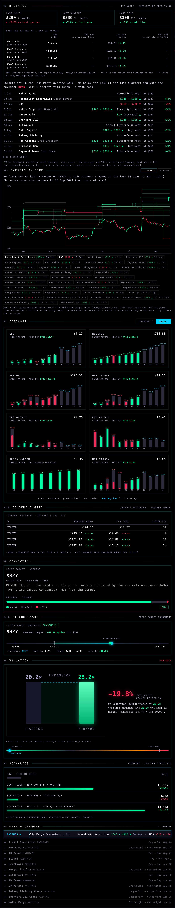
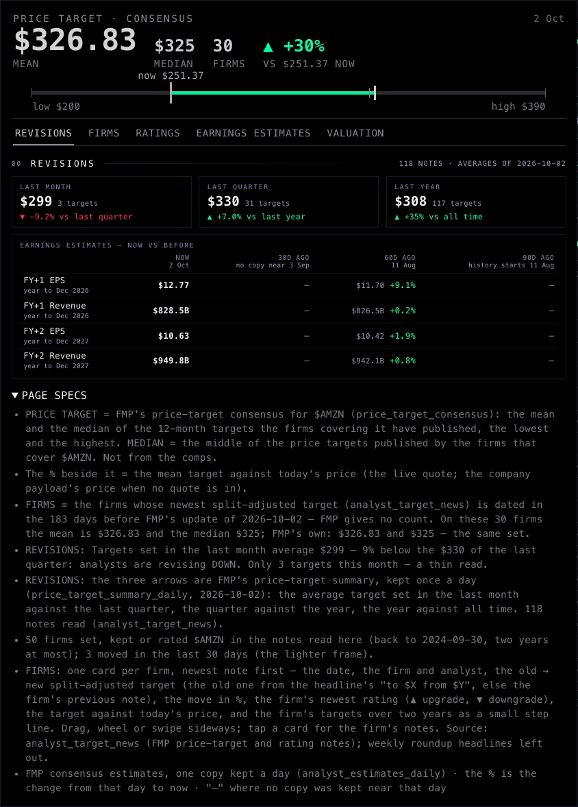
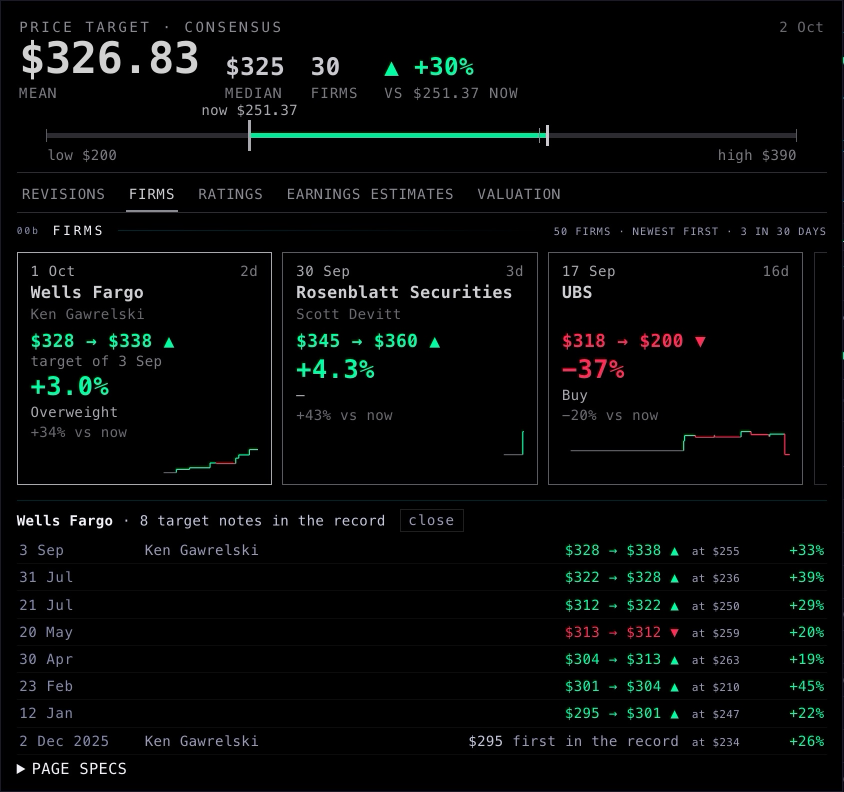
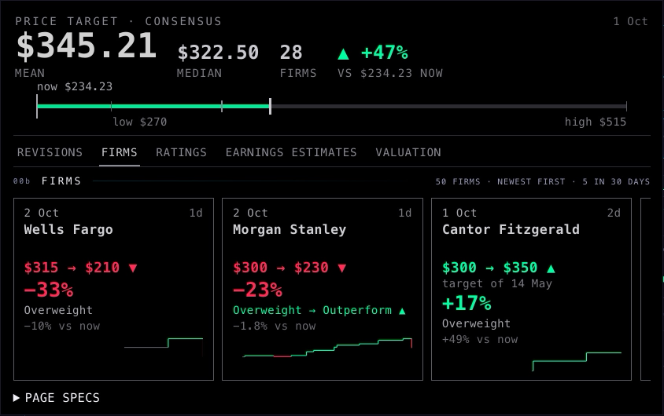
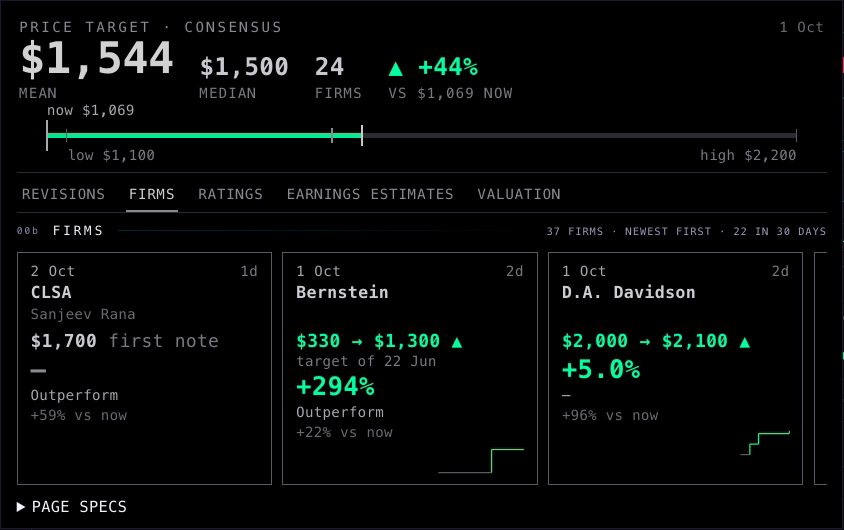
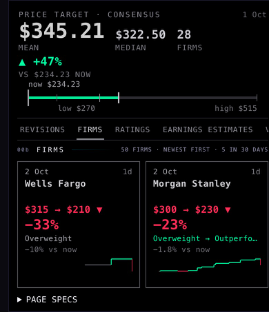
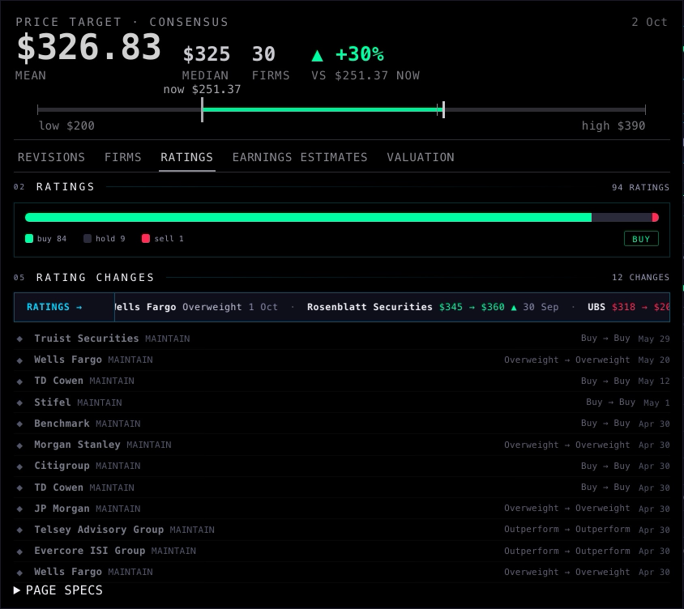
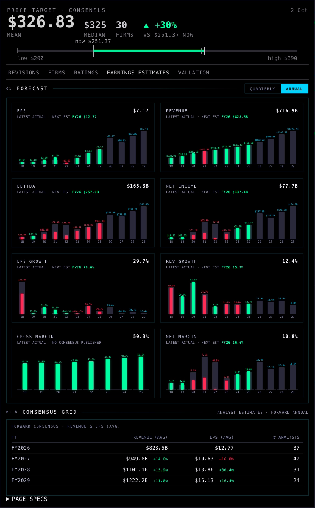
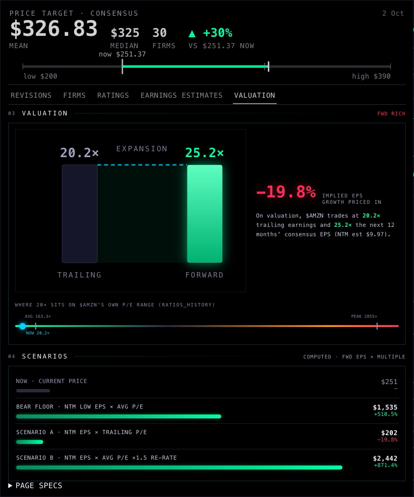
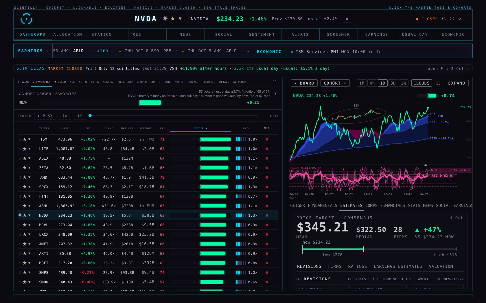

A3 · The analysts tab
ESTIMATES, 3 Oct 2026 · AMZN, NVDA, MU · headless screenshots, 1680 × 1050 (and phone 390) · not deployed · branch hub/a3-analysts-tab-20261003
Before → after (AMZN, the whole tab unrolled)


The firms, left to right




The other sub-tabs (AMZN)



As it opens on the screen (NVDA, 1680 × 1050)

Where each number comes from
| On the page | Source |
|---|---|
| Mean, median, low, high | FMP's price-target consensus (price_target_consensus), as stored. The date on the right is when FMP last updated it. |
| Number of firms | FMP doesn't give a count. We count the firms whose latest target falls in the 6 months (183 days) before FMP's update. That same group reproduces FMP's numbers exactly on AMZN (30 firms) and NVDA (28), and the average to within $4 on MU (24). A test checks this against the real 3 Oct notes. |
| % vs now | The mean target against the live price. |
| Revision arrows | Unchanged: FMP's price-target summary, kept once a day (price_target_summary_daily). |
| Firm cards | FMP's price-target and rating notes (analyst_target_news), the last two years. Targets are split-adjusted. The old target comes from the headline's "to $X from $Y", or else from that firm's previous note. Weekly roundup headlines ("top 10 stock calls") are left out. |
| Estimates now vs before | Unchanged: analyst_estimates_daily. |
What could be wrong
- The firm count is ours, not FMP's. MU is $4.16 off on the average, so one firm there is counted differently from FMP.
- A card's "old → new" can span months. MU · Bernstein went from $330 to $1,300, and the step was 22 Jun against a note from last year. The card shows the date; the size of the move is real.
- Many firms show no rating ("—") because we have no rating note from them in two years (for example, Rosenblatt on AMZN).
- The FIRMS cards count every firm with a note in two years (AMZN 50). The firm number in the price target counts six months (AMZN 30). They answer different questions.
What I did not do
- No deploy. The branch is pushed for the coordinator.
- PAGE SPECS is markup only. V1 styles it across the Hub; until then it shows as a plain fold.
- The comps tab, global colours and fonts, Indicator Lab and the rail's height are untouched.
- The old step chart is removed, not hidden. A firm's history now opens under its card.